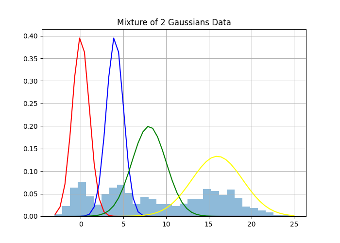
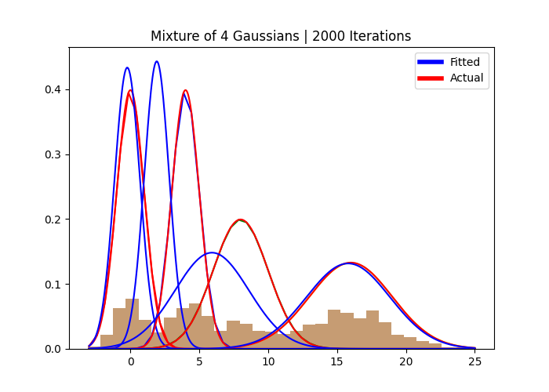
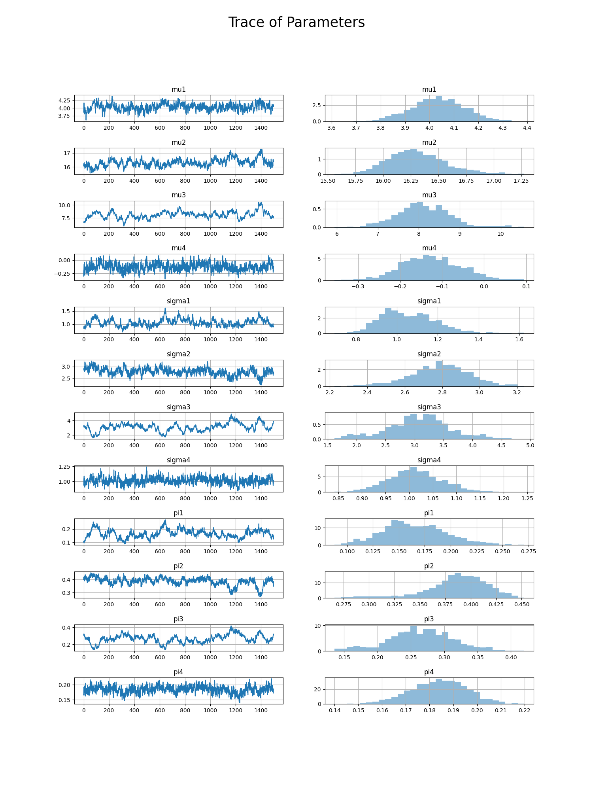

In my previous post, I derived a Gibbs Sampler for a univariate Gaussian Mixture Model (GMM). In this post I will extend the sampler to handle the K-Component univariate GMM. As a quick reminder, Gibbs Sampling is a MCMC method for sampling from multivariate distributions that may be difficult to sample from directly. The method is commonly used in bayesian inference when sampling the the posterior or joint distribution in question. The samples generated from the Markov chain will converge to the desired distribution when \(N\) is large.
The K-Component GMM can be defined as \(p(x|\theta) = \sum_{j=1}^K\pi_j\phi_{\theta_j}(x)\). This model assumes that \(K\) is known, so let’s set \(K=4\) and generate some data with the following parameters:
\[ \begin{align*} \pi & = \{.2,.2,.2,.4\}\\ \mu & = \{0,4,8,16\}\\ \sigma & = \{1,1,2,3\} \end{align*} \]
import numpy as np
from numpy.random import binomial, normal, beta, multinomial
import scipy.stats as st
from scipy.stats import invgamma, norm, dirichlet, multivariate_normal
import matplotlib.pyplot as plt
from matplotlib.lines import Line2D
from distcan import InverseGamma
def data_gen(mu, sigmas, phi, n):
"""
Generates samples from Mixture of K Gaussian Distributions
"""
y = []
for i in range(n):
ind = multinomial(1, phi)
for j, val in enumerate(ind):
if val == 1:
y.append(norm(mu[j], sigmas[j]).rvs())
else:
next
return np.array(y)
# Set Starting Parameters
mu = [0,4,8,16]
sigmas = [1,1,2,3]
phi = [.2,.2,.2,.4]
n = 2000
y = data_gen(mu=mu, sigmas=sigmas, phi=phi, n=n)
x = np.linspace(-3,25)
# Create Plot of Data
plt.hist(y, 30, density=True, alpha=0.5);
plt.plot(x, norm(mu[0], sigmas[0]).pdf(x), color="red")
plt.plot(x, norm(mu[1], sigmas[1]).pdf(x), color="blue")
plt.plot(x, norm(mu[2], sigmas[2]).pdf(x), color="green")
plt.plot(x, norm(mu[3], sigmas[3]).pdf(x), color="yellow")
plt.title("Mixture of 2 Gaussians Data")
plt.grid()
plt.savefig("mix2.png")
Now that we are sampling from more than 2 gaussians, we need a distribution to define over \(p(\pi)\) that generalizes to more than 2 groups. Recall that when we were using \(K=2\), we had used the beta distribution. The multivariate generalization of the beta distribution is known as the Dirichlet distribution, often written as \(Dir(\pmb{\alpha})\) where \(\pmb{\alpha}\) is a vector of positive reals. The full Dirichlet distribution is defined as:
\[ p(\pi_1, ..., \pi_k | \pmb{\alpha}) = \frac{\Gamma\left(\sum_{j=1}^K\alpha_j\right)}{\prod_{j=1}^k\Gamma(\alpha_j)}\prod_{j=1}^K\pi_j^{\alpha_j-1} \]
We can generate samples from the Dirichlet Distribution with various parameters to better understand how the distribution works. The top left plot shows the case when \(\pmb{\alpha}\) is equal for all \(k\), but small. This results in the samples over each group to be pushed more towards 1 or 0. In the extreme, the samples of vector \(\pmb{\pi}\) has one group with \(\pi_j = 1\) and the rest with \(\pi_{\neg j} = 0\). In the other plots where \(\pmb{\alpha}\) is equal across all \(k\), we can see that increasing the magnitude of \(\pmb{\alpha}\) reduces the variance in the samples of \(\pmb{\pi}\) The last plot demonstrates how varying \(\alpha_j\) changes the mean of each \(\pi_j\) being sampled based on the proportions of \(\alpha_j\) compared to \(\alpha_{\neg j}\)
Recall that in my last post, we set our prior distribution \(p(\pi) \sim Beta(\alpha = 1, \beta = 1)\). We were using the beta distribution to describe the probability of drawing from one of our Gaussian distributions. Now that we have expanded from \(K=2\) to \(K=4\), we simply replace this prior with \(p(\pi) \sim Dir(\pmb{\alpha} = \pmb{1})\). This gives us our full list of priors as follows:
\[ \begin{align*} p(\pmb{\pi}) & \sim Dir(\pmb{\alpha})\\ p(\mu_j) & \sim N(\mu_0 = 0, \tau^2 = 1)\\ p(\sigma_j^2) & \sim IG(\delta = 1, \psi = 1) \end{align*} \]
We’ve already defined the posterior over \(\theta\) when \(K=2\) and \(p(\pi) \sim Beta(1,1)\). First we can examine the case when \(K=2\) and compare the changes to the case when \(K\) is larger and the Dirichlet distribution is required. I’ve highlighted the changes in green.
\[ \begin{align*} p(\theta|x,z) & \propto p(x, z| \theta)p(\pmb{\pi})\prod_{j=1}^k\left[p(\mu_j)p(\sigma_j^2)\right]\\ & \propto \color{green}{\pi^{\sum_{i=1}^Nz_1}(1-\pi)^{\sum_{i=1}^Nz_2}} \prod_{i=1}^N\prod_{j=1}^K\phi_{\theta_j}(x_i)^{z_j}\prod_{j=1}^K\exp\left[-\frac{\mu_j^2}{2}\right]\left(\sigma^2_j\right)^{-2}\exp\left[-\frac{1}{\sigma^2_j}\right]\\ \end{align*} \]
Now if we substitute \(Dir(\pmb{\alpha})\) for \(p(\pi) \sim Beta(1,1)\), we get:
\[ \begin{align*} p(\theta|x,z) & \propto p(x, z| \theta)p(\pi)\prod_{j=1}^k\left[p(\mu_j)p(\sigma_j^2)\right]\\ & \propto \color{green}{\frac{\Gamma\left(\sum_{j=1}^K\alpha_j\right)}{\prod_{j=1}^k\Gamma(\alpha_j)}\prod_{j=1}^K\pi_j^{\alpha_j-1}\pi_j^{\sum_{i=1}^Nz_i}}\prod_{i=1}^N\prod_{j=1}^K\phi_{\theta_j}(x_i)^{z_j}\prod_{j=1}^K\exp\left[-\frac{\mu_j^2}{2}\right]\left(\sigma^2_j\right)^{-2}\exp\left[-\frac{1}{\sigma^2_j}\right]\\ \end{align*} \]
Now that we can isolate our variables to solve for the complete conditional of \(\pi\).
\[ \begin{align*} p(\pi|x, z, \pmb{\sigma}, \pmb{\mu}) & \propto \prod_{j=1}^K \pi_j^{\alpha_j - 1 + \sum_{i=1}^N z_i}\\ p(\pi|x, z) & \sim Dir\left(\sum_{i=1}^Nz_1 + \alpha_1, ..., \sum_{i=1}^Nz_k + \alpha_k\right) \end{align*} \]
def update_pi(alpha_vec, z_vec):
"""
Sample from Posterior Conditional for pi
"""
assert len(z_vec) == len(alpha_vec), "Number of distributions must equal number of parameters"
return dirichlet(z_vec + alpha_vec).rvs()The complete conditionals for \(\pmb{\mu}\) and \(\pmb{\sigma}\) remain the same as the \(k=2\) example:
\[ \begin{align*} p(\mu | x, z, \pmb{\sigma}, \pmb{\pi}) \sim N \left(\frac{\tilde{x_j}}{n_j + 1}, \frac{\sigma^2_j}{n_j + 1}\right)\\ \end{align*} \]
Notice that in the code we sample from a multivariate normal with the variances on the diagonal. This is purely to speed up the calculations and equivalent to the statement above.
def update_mu(y, z_mat, sigma_vec):
"""
Sample from Posterior Conditional for mu
"""
mu_vec = []
n_j = np.sum(z_mat, axis=0)
for j in range(len(sigma_vec)):
sigma_vec[j] = sigma_vec[j] / (n_j[j] + 1)
mu_vec.append(np.sum(y * z_mat[:,j]) / (n_j[j] + 1))
cov = np.diag(sigma_vec)
return multivariate_normal(mu_vec, cov).rvs()Moving on to \(\sigma^2\):
\[ \begin{align*} p(\mu|x, z, \pmb{\sigma}, \pmb{\pi}) & \sim IG\left(\frac{1}{2}n_j + 1, 1 + \frac{1}{2}\sum_{i=1}^N(x-\mu_j)^2\right) \end{align*} \]
def update_sigma(data, z_mat, mu):
"""
Sample from Posterior Conditional for sigma
"""
n_j = np.sum(z_mat, axis=0)
alpha = (0.5 * n_j) + 1
beta = []
for j in range(len(mu)):
y = data * z_mat[:,j]
y = y[y != 0]
beta.append((0.5 * np.square(y - mu[j]).sum()) + 1)
return InverseGamma(alpha, beta).rvs()The updates for each \(z_{i,j}\) is also still the same:
\[ \begin{align*} p(z|\theta,x) & = \frac{\pi_j\phi_{\theta_1}(x_i)}{\sum_{j=1}^K\pi_j\phi_{\theta_j}(x_i)} \end{align*} \]
def update_z(data: list, mu, sigma, pi):
"""
Sample from latent variable Z according to likelihoods for class assignment
"""
a = np.empty((len(data), len(mu)))
out = np.empty((len(data), len(mu)))
for j in range(len(mu)):
a[:,j] = norm(mu[j], np.sqrt(sigma[j])).pdf(data) * pi[0,j]
pi_i = a / np.sum(a, axis=1)[:,None]
for i in range(len(data)):
out[i,] = multinomial(1, pi_i[i,:])
return outFinally, the Gibbs algorithm is the same with minor code differences to account for the changes in parameters and data structures
def gibbs(data, iters, burnin, k):
"""
Run Gibb's Sampling for Mixture of 2 Gaussians. Initial States are sample from Priors
"""
# Set initial guesses based on priors
alpha = [1,1,1,1]
mu = normal(0, 1, size=k)
pi = dirichlet(alpha).rvs()
sigma = InverseGamma(1,1).rvs(size=k)
out = np.empty((iters, k*3))
for i in range(iters):
# Update Parameters according to conditional posterior distributions
z_mat = update_z(data, mu, sigma, pi)
pi = update_pi(alpha, np.sum(z_mat, axis=0))
mu = update_mu(data, z_mat, sigma)
sigma = update_sigma(data, z_mat, mu)
# Store Values to monitor trace
out[i, 0:4] = mu
out[i, 4:8] = np.sqrt(sigma)
out[i, 8:12] = pi[0,:]
return out[burnin:,:]
# Fit the model and extract parameters
trace = gibbs(y, 2000, 500, 4)
params_dict = {}
for j in range(len(mu)):
params_dict.update(
{
f"mu{j}": np.round(np.mean(trace[:,j]),2),
f"sigma{j}": np.round(np.mean(trace[:,j+4]),2),
f"pi{j}": np.round(np.mean(trace[:,j+8]),2)
}
)
x = np.linspace(-3,25, 500)
plt.hist(y, 30, density=True, alpha=0.5);
for j in range(len(mu)):
plt.plot(x, norm(mu[j], sigmas[j]).pdf(x), color="red")
plt.plot(x, norm(params_dict[f"mu{j}"], params_dict[f"sigma{j}"]).pdf(x), color="blue")
plt.title(f"Mixture of 4 Gaussians | {n} Iterations")
legend_elements = [
Line2D([0], [0], color='blue', lw=4, label='Fitted'),
Line2D([0], [0], color='red', lw=4, label='Actual')
]
plt.legend(handles=legend_elements, loc="upper right")
plt.grid()
plt.savefig("mix4.png")
And one of the largest benefits of fitting the parameters using bayesian methods is that we can plot the full posterior distributions over \(\theta\), giving us uncertainty in our fit as well as our point estimates. The full posteriors can be plotted as follows:
fig, axs = plt.subplots(12,2)
x = range(trace.shape[0])
params = ["mu1", "mu2", "mu3", "mu4", "sigma1", "sigma2", "sigma3", "sigma4", "pi1", "pi2", "pi3", "pi4"]
for i, v in enumerate(params):
y = trace[:,i]
axs[i,0].plot(x, y)
axs[i,0].set_title(v)
axs[i,1].hist(y, 30, density=True, alpha=0.5);
axs[i,1].set_title(v)
axs[i,0].grid()
axs[i,1].grid()
fig.suptitle("Trace of Parameters", fontsize=25)
fig.set_figheight(20)
fig.set_figwidth(15)
fig.subplots_adjust(hspace=1)
fig.savefig("trace_plot.png")